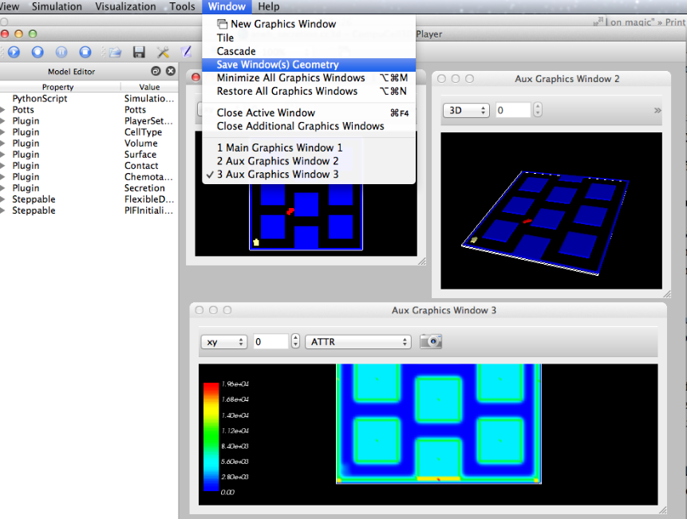
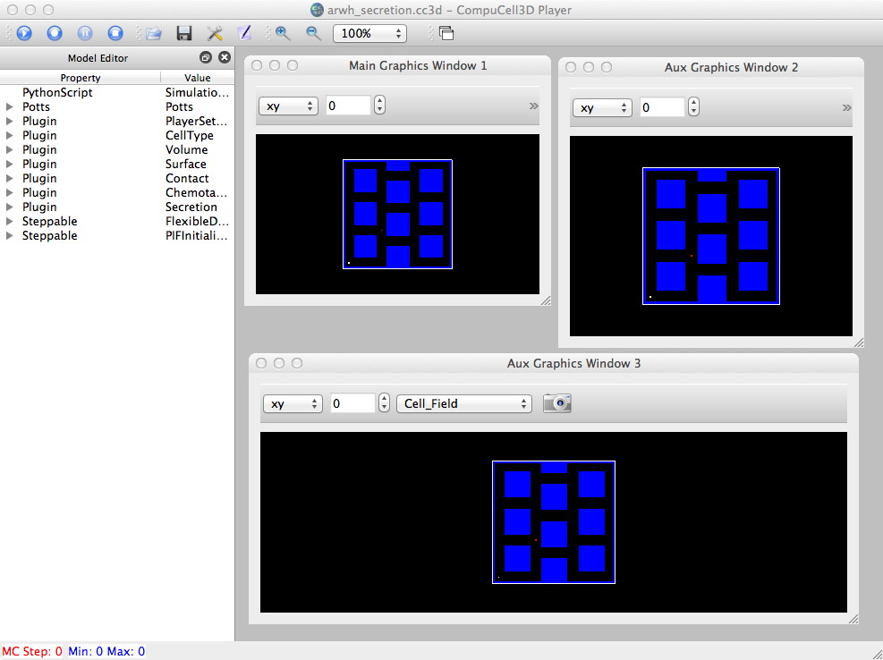

How one can save/re-use graphics window(s) position & size:

The "Save ..." Windows menu item will create a file, windows.xml, in the working directory. You need to then manually copy/move that file to your model definition directory and incorporate it into your .cc3d file:
~/dev/Glazier/cc3d-git-10-31-12/Demos/arwh_secretion/Simulation$ cp ~/dev/Glazier/cc3d-git-10-31-12/windows.xml .
~/dev/Glazier/cc3d-git-10-31-12/Demos/arwh_secretion/Simulation$ ty windows.xml
<Windows>
<Window Name="Main Graphics Window 1">
<Location x="10" y="10"/>
<Size width="343" height="280"/>
</Window>
<Window Name="Aux Graphics Window 2">
<Location x="361" y="12"/>
<Size width="342" height="325"/>
</Window>
<Window Name="Aux Graphics Window 3">
<Location x="15" y="343"/>
<Size width="682" height="303"/>
</Window>
</Windows>
~/dev/Glazier/cc3d-git-10-31-12/Demos/arwh_secretion/Simulation$ ty ../arwh_secretion.cc3d
<Simulation version="3.6.1">
<XMLScript Type="XMLScript">Simulation/bacterium_macrophage_2D_secretion.xml</XMLScript>
<PythonScript>Simulation/bacterium_macrophage_2D_secretion.py</PythonScript>
<Resource Type="Python">Simulation/bacterium_macrophage_2D_secretion_steppables.py</Resource>
<WindowScript Type="XML">Simulation/windows.xml</WindowScript>
<PIFFile>Simulation/bacterium_macrophage_2D_wall.piff</PIFFile>
</Simulation>

Note that when we use the windows.xml file in our .cc3d, it positions/resizes the windows, but does not restore the particular types of visualization in each window.